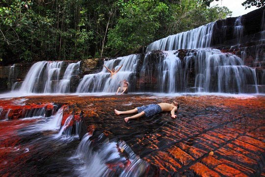

Angel Falls


Located in the Guyana Plateau region of the Livora region of Venezuela in South America,
it is 979.6 meters high and is the largest waterfall in the world. Angel Falls is situated
on a flat tabletop mountain (Oyant Puy Hill). The cliffs of the mountains are almost perpendicular
to the water level. The top of the mountain is as flat as the tabletop, surrounded by the sea of clouds.
La gran sabana/ the big forest


If you are going to South America to explore Machu Picchu, visit the Iguazu Falls and hike through
Patagonia, then you must explore La Gran Sabana. Gran Sabana is one of the most beautiful landscapes
in Canaima Park in southern Venezuela. It is the fourth largest national park in the world and is
a UNESCO World Heritage Site. Gran Sabana is an area with bushes and table-shaped mountains, called
by the aborigines of Tepuyies. The park also boasts the world's largest waterfall, Angel Falls, and
a free fall nearly 1 km. This is a very beautiful area to understand and understand the beauty of
Venezuela, don't worry, in this place, every visitor is always popular, and the problems that plague the country are far from there.